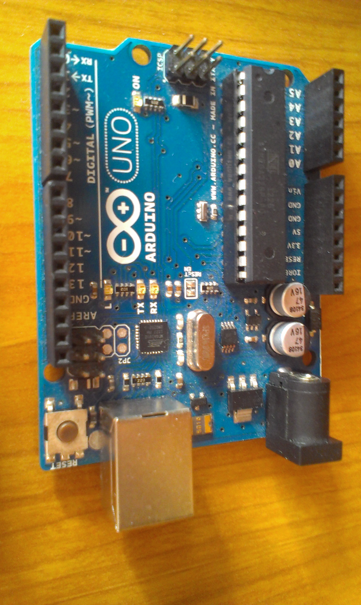
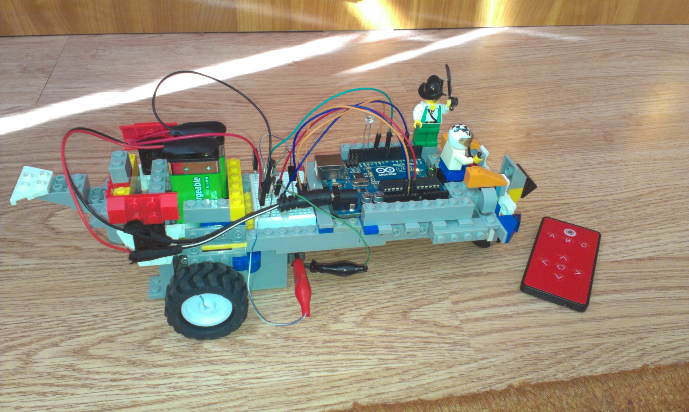

Chipurile pot fi programate să efectueze diferite sarcini care presupun primirea și transmiterea informațiilor. Aceste sarcini pot fi asemănate cu un program in C++ care primește informații de la tastatură sau din fișier, iar în urma parcurgerii unui program sunt afișate informațiile pe ecran sau în fișier.
Arduino este o placă ce poate fi utilizată pentru a programa chipuri. Fiecare model de placă programează un anumit tip de chip, de exemplu Arduino UNO programează ATmega238 și Arduino Leonardo folosește ATmega32u4.
Pentru a arată potențialul unui chip am construit o masinuță cu telecomandă folosind un cod simplu si câteva cunoștințe de fizică. Am utilizat modelul UNO care se conectează la computer cu ajutorul unui cablu USB A-B. Unele proiecte necesită computerul doar pentru cod de aceea poate fi alimentată cu o sursă externă (de exemplu o baterie).
